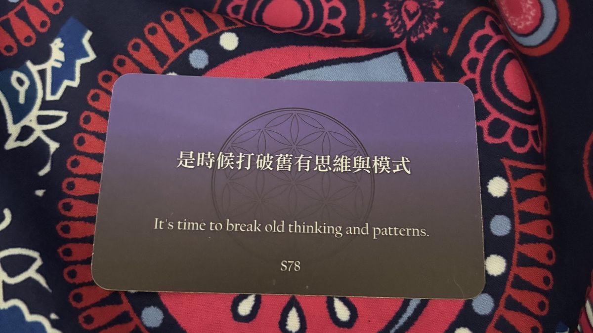

一次只接一組
每一次只接待不超過 5 位朋友。不擁擠、不將就，留足屬於你們的私人空間。
Anning · 春城旁的家
春城昆明的煙火深處，有一間不追求商業化的小家。我們不是傳統短租，只想以家為橋，接住從海峽那一端來的有緣朋友——放下行李，吹吹春城的風，嘗嘗雲南的茶，把這裡當成家。
一次只接一組
最多 5 位朋友，留足空間，像回自己家一樣自在
7 天 6 夜旅居
短期居住，不是跟團：首日接風、末日送別，中間五天你自在安排
出發前先聽你的故事
你嚮往怎樣的旅途，我們先聊，再幫你準備
先確認日期，再付款
送出預約後，我們對好日期才寄付款資訊
Our belief · 我們相信的幸福
我們相信，幸福不是設計出來的模樣，而是人與人之間，自然而然流動的善意。不打擾，卻隨時在；不求完美，卻處處藏著小心思。
如果你願意，我們想做你在昆明的「遠方家人」。讓旅途不再只是打卡趕路，而是放慢腳步，在一杯清茶、一句問候裡，讓兩岸的情誼慢慢長出來。
How we host · 我們怎麼招待你
半自助式的旅居：該陪的時候在，該留白的時候不打擾。
每一次只接待不超過 5 位朋友。不擁擠、不將就，留足屬於你們的私人空間。
第一天用簡單的儀式感接風，最後一天好好送別。中間五天你自在探索春城，我們不全程相伴，卻會不定時送上小驚喜。微信一直在線，有需要隨時找我們。
你嚮往怎樣的旅途？喜歡慢慢走，還是深度遊？告訴我們。我們幫你介紹雲南在地可靠的包車師傅、旅行社，還有當地人真正愛吃愛去的地方。有計畫，也順應變化。
食、衣、住、行、育、樂，想問什麼都可以。在陌生的城市，身邊有個熟門熟路的人，心就安了。
Our home · 我們的家
不大不小，沒什麼奢華裝修，卻處處是生活的痕跡。
廚房裡鍋碗瓢盆都齊，想煮碗麵、煮個湯，都隨你。窗台有花，桌上有茶，每一處角落，都是我們對生活、對遠方來客的真心。
沒有陌生的距離，沒有商業的套路。有的只是真誠的陪伴，和這座春城最溫柔的煙火氣。
Anning · 春城旁的慢生活
從昆明往西約 32 公里，車程四十分鐘左右。曾是茶馬古道上的一站，如今是滇西旅遊環線的第一程，也是昆明人週末想躲一躲時，第一個想起的地方。
Hot spring · 溫泉
Nature · 山水
History · 人文
Countryside · 田園
藍花楹開得像夢，玫瑰正香
躲進青龍峽，玩水、漂流
稻田金黃，風過像浪
窩進溫泉，什麼都不想
餓了就去吃：皮脆肉嫩的安寧烤鴨、街頭巷尾飄香的玫瑰鮮花餅、酸甜解膩的酸角汁；趕上菌子季，再來一鍋野生菌火鍋。

A blessing · 療心卡的祝福
It's time to break old thinking and patterns.
換一個城市住上七天，也是換一種活法。來安寧，給自己一段不趕路的日子。
Your stay · 你的旅居
還沒選房型，先挑一間吧。
送出後先不用付款。一次只接待一組，我們會用微信或 LINE 跟你確認日期與房間，確認後再寄付款資訊。
WeChat · 加微信
出發前聊聊這趟想怎麼過、到了安寧有什麼需要，都可以找 Rena chien。